Third Exam, Friday, December 5, 2003.
You may use any result from your notes or a homework that is clearly stated.
You may use one sheet of handwritten notes, but no other sources.
The exam consists of six questions, and lasts one hundred minutes.
- 1.
- (15 points; 5 points for each part)
Consider the linear programming problem
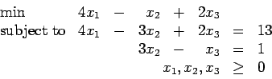
- (a)
- Show that
x(0)=(3,1,2) is an appropriate point to start
an interior point log barrier algorithm.
- (b)
- Form the corresponding log barrier problem with multiplier
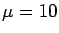.
- (c)
- Show how you would compute the move that direction
that could be pursued by the primal log barrier
method given in the text.
(Note: Let
P=(I-DAT(AD2AT)-1AD) denote the 3 x 3
projection matrix in an appropriate rescaled space,
where A is the constraint matrix and D is an appropriate diagonal matrix.
I want you to give me the formula for
in terms of P and various
numbers. Your formula should contain numbers for all quantities except the
elements of P.)
- 2.
- (20 points)
The LP relaxation of an integer programming problem has optimal tableau M given below:
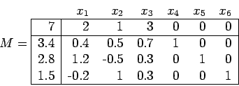
It has been decided to branch on x4.
- (a)
- (10 points)
Use the dual simplex method to find the optimal solution to the LP relaxation
with the additional constraint that 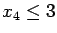.
- (b)
- (10 points)
Show that the linear programming relaxation with the additional restriction
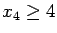
is infeasible.
- 3.
- (15 points)
Consider the transportation problem represented in the following table:
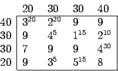
There are four sources and four destinations. The supplies and demands
are indicated. The cost of each arc is given in the table, and a feasible
solution x is indicated by the superscripts.
- (a)
- (5 points) Is the given solution x a basic feasible solution
in the linear programming representation of this transportation
problem?
- (b)
- (5 points) Can you find a basic feasible solution which is better
than the given point x? (Hint: You should modify x;
you don't need to start from scratch. You do not need to find the optimal
solution.)
- (c)
- (5 points) Is the basic feasible solution you found an optimal solution?
- 4.
- (15 points) A capital equipment problem requires deciding which of projects 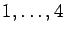
should be funded. Project i costs ci and has a value vi, given
in the table:
| |
1 |
2 |
3 |
4 |
| Cost ci |
2 |
3 |
4 |
5 |
| Value vi |
3 |
5 |
7 |
9 |
The total budget available is 11.
A dynamic programming formulation for this problem is to define
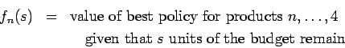
and
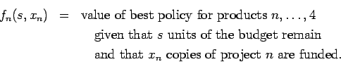
Note that xn is equal to either 1 or 0, indicating that project n
is funded or not funded, respectively.
Recursive equations for this problem are
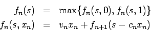
with fn(s) defined to be
if s<0.
We have the following table of values for fn(s):
(Note that I've omitted the columns for fn(s,xn) and
that the approach discussed in class would have presented this data in four tables.)
| s |
f4(s) |
x4* |
f3(s) |
x3* |
f2(s) |
x2* |
f1(s) |
x1* |
| 0 |
0 |
0 |
0 |
0 |
0 |
0 |
0 |
0 |
| 1 |
0 |
0 |
0 |
0 |
0 |
0 |
0 |
0 |
| 2 |
0 |
0 |
0 |
0 |
0 |
0 |
3 |
1 |
| 3 |
0 |
0 |
0 |
0 |
5 |
1 |
5 |
0 |
| 4 |
0 |
0 |
7 |
1 |
7 |
0 |
7 |
0 |
| 5 |
9 |
1 |
9 |
0 |
9 |
0 |
9 |
0 |
| 6 |
9 |
1 |
9 |
0 |
9 |
0 |
10 |
1 |
| 7 |
9 |
1 |
9 |
0 |
12 |
1 |
12 |
1 |
| 8 |
9 |
1 |
9 |
0 |
14 |
1 |
14 |
1 |
| 9 |
9 |
1 |
16 |
1 |
16 |
0 |
16 |
0 |
| 10 |
9 |
1 |
16 |
1 |
16 |
0 |
17 |
1 |
| 11 |
9 |
1 |
16 |
1 |
16 |
0 |
19 |
1 |
In the following questions, you must use the table
to get credit.
- (a)
- (5 points)
What is the optimal value of this problem?
- (b)
- (5 points)
What is the optimal solution x?
- (c)
- (5 points)
Now assume that the budget has been decreased to 8 and it has been
decided not to fund project 1.
What is the optimal solution to this problem, and what is its value?
- 5.
- (15 points)
Use LP duality to argue that at least one of the following systems must be inconsistent:
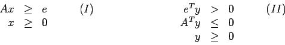
Here A is an m x n matrix, x is an n-vector, y is an m-vector,
and e is the m-vector with every component equal to one.
(Hints: assume one of the systems has a solution and show that it then follows that
the other one does not;
the dual to
is
.)
Hence show that if there exists a point
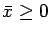
with 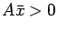
then there is no nonzero,
nonnegative
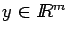
with 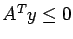.
(Hints: rescale 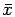;
if y is nonzero and nonnegative then eTy>0.)
- 6.
- (20 points; each part is worth 10 points)
Let G=(V,A) be the following directed graph, where the label on each edge
gives the cost of traversing that edge.
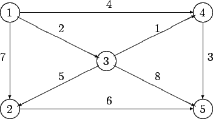
- (a)
- Use Dijkstra's algorithm to find the shortest path from vertex 1 to vertex 5.
- (b)
- Find the shortest path from vertex 1 to vertex 5 in the graph using the
network simplex method, starting with basic variables
x14=1, x45=1, x12=0, and x13=0, with the
other variables nonbasic.
John E. Mitchell
2004-11-05